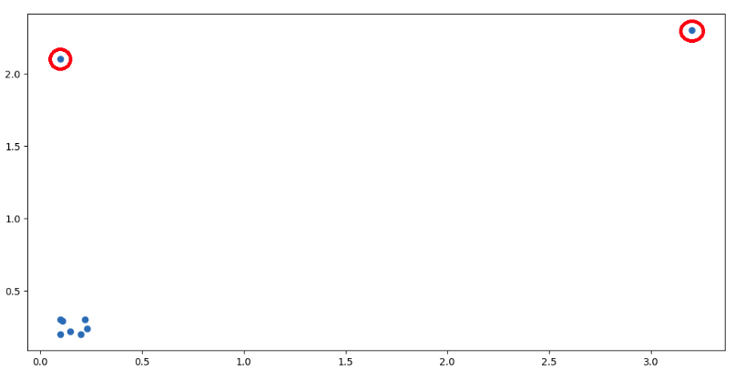
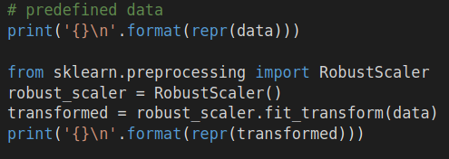
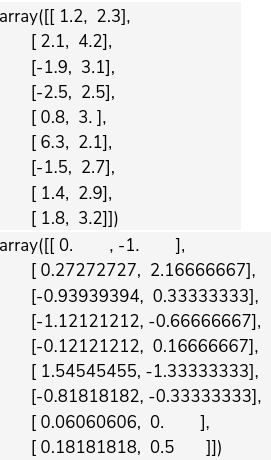
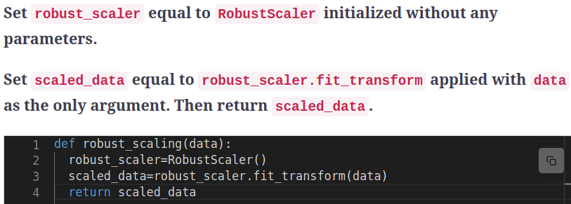

Robust Scaling
Chapter Goals:
• Learn how to scale data without being affected by outliers
Data outlinersAn important aspect of data that we have to deal with is
outliers. In general terms, an outlier is a data point that is significantly further away from the other data points. For example, if we had watermelons of weights 5, 4, 6, 7, and 20 pounds, the 20 pound watermelon is an outlier.

The data scaling methods from the previous chapters are both affected by outliners.Data standardization uses each feature's mean and standard deviation, while ranged scaling uses the maximum and minimum feature values, meaning that they're both susceptible to being skewed by outlier values.
We can robustly scale the data, i.e. avoid being affected by outliers, by using use the data's median and
Interquartile Range (IQR). Since the median and IQR are percentile measurements of the data (50% for median, 25% to 75% for the IQR), they are not affected by outliers. For the scaling method, we just subtract the median from each data value then scale to the IQR.
~~~~~~~~~~~~~~~~~~~~~~~~~~~~~~~~~
Robust Scaling with scikit-learnIn scikit-learn, we perform robust scaling with the
RobustScaler module. It is another transformer object, with the same
fit,
transform, and
fit_transform functions described in the previous chapter.
 
~~~~~~~~~~~~~~~~~~~~~~~~~~~~~~~~~
